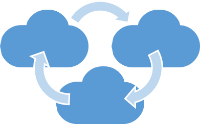

<div class="homeMsm">
  <div *ngIf="readLocalStorageValue('userSignedUp') == 'SignedUpUser'">
    <h3>Welcome to our team the Multicloud App dear new customer! Hope you enjoy our app</h3>
  </div>
  <div *ngIf="readLocalStorageValue('userSignedIn') == 'SignedUser'">
    <h3>Welcome back to the Multicloud App, dear customer! Hope you enjoy our app</h3>
  </div>
  <div *ngIf="readLocalStorageValue('userSignedIn') !== 'SignedUser' && readLocalStorageValue('userSignedUp') !== 'SignedUpUser'">
    <h2>Welcome to the Multicloud App</h2>
  </div>
<div class="homeTxt">
  <p>With Multicloud, you can manage files between multiple cloud storage services, such as DropBox, Google Drive, OneDrive, and Box</p>
  <br />
  <p>To begin, click on the Sign Up button to create an account. If you already have an account, click on the Sign In button</p>
  <br />
  <p>To associate services with your account, click on the <mat-icon inline=true>menu</mat-icon> button, and navigate to the Cloud Management page.
    <br> Enter your cloud account details. You must be signed into the Multicloud app to do this.
  </p>
  <br />
  <p>To manage or transfer files, click on the <mat-icon inline=true>menu</mat-icon> button, and navigate to the File Transfer Page. <br>
    You must be signed into the Multicloud app, and have at least one cloud account configured and added.
  </p>
</div>
</div>
